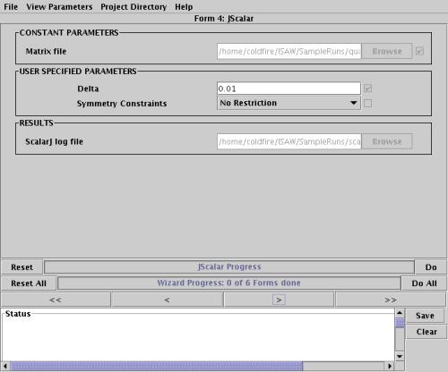

Here is a screenshot of step 1 of the Wizard:

This step is used to find peaks from a single run using several parameters. The result is a peaks file.
Its parameters are:
- Raw data path: This is the directory the runfiles are in (e.g. C:\\ISAW\SampleRuns). If you are using the Browse button to find this directory, you must highlight the directory you want rather than going into the directory.
- Output data path: This is the directory you want the resultant output to go to.
- Run numbers: Here is where you enter the run number you want to analyze. For example, if you are analyzing SCD06497.RUN, you would enter 06497 or 6497 here.
- Experiment name: This is the name of your experiment (e.g. quartz). Note that this name will be used for the peaks file naming (e.g. quartz.peaks).
- Maximum number of peaks: This is the maximum number of peaks you want listed in the peaks file.
- Minimum peak intensity: The minimum intensity that a peak should have to be included in a file.
- Append data to file: If you have an existing peaks file that you wish this analysis to be appended to, check this box. In order for this to work, the peaks file must be named, for example, quartz.peaks if your experiment name is quartz. If the file does not exist, you will get an error.
- SCD calibration file line to use: this is the line of the specified calibration file to use for this analysis. Putting a -1 here will select the most recent data.
- SCD calibration file: This is the fully qualified name of the calibration file to use (e.g. C:\\ISAW\SampleRuns\instprm.dat).
- Pixel rows and columns to keep: This is the range of values of the detector pixel information to keep. Note that a square detector is assumed, so if you have a 100 x 100 pixel detector, and you want to remove 10 pixels on each side (due to noise, etc.), you would put 10:90 in this field.
Here is a screenshot of step 2 of the Wizard:

This step is used to find an initial orientation matrix for this data. Its output is the log file from BlindJ as well as an orientation matrix.
Its parameters are:
- Peak sequence numbers: These are the sequence numbers that you have selected after viewing the peaks file (click on the View option in the menus to view the peaks file). In general, these will be the peaks with the highest intensity.
- Matrix file: this is the fully qualified name of the file that you want the orientation matrix written to. You do not need to append a .mat extension to the file name as it is done automatically. You may append it if you wish, as the Wizard can handle it either way.
Here is a screenshot of step 3 of the Wizard:

This step is where you will index the peaks that were found in step 1. Its output is the file index.log.
Its parameters are:
- Restrict runs: In general you will not need to worry about this for this Wizard. If, however, you are analyzing multiple runs and you only want to index one of the runs, you would enter the run number here. Leaving this blank selects all runs.
- Delta h: This is the allowable h uncertainty
- Delta k: This is the allowable k uncertainty
- Delta l: This is the allowable l uncertainty
- Update peaks file: checking this box will update the peaks file with the indexing information.
- Append to log file: If this option is unchecked, any existing index.log file in the output data path will be overwritten. To append the index results to an existing log file, check this box.
Here is a screenshot of step 4 of the Wizard:

Here is where you will select a crystal geometry. Its output is scalar.log.
Its parameters are:
- Delta: ??????
- Symmetry constraints: restrictions on the resulting symmetry (e.g. P-cubic, I-cubic, etc.).
Here is a screenshot of step 5 of the Wizard:

This step is where you will refine the initial orientation matrix based on the results of indexing the peaks and the crystal geometry. Its output is the lsqrsj.log file and a refined orientation matrix.
Its parameters are:
- Restrict runs: In general you will not need to worry about this for this Wizard. If, however, you are analyzing multiple runs and you only want to refine the matrix based on one of the runs, you would enter the run number here. Leaving this blank selects all runs.
- Restrict sequence numbers: These are the sequence numbers that you want to restrict the refinement to.
- Transform matrix: This is the matrix for the crystal geometry you found in step 4. If you want to view this file, click on the left arrow button and go to the View menu.
- Matrix file: this is the fully qualified name of the file that you want the orientation matrix written to. You do not need to append a .mat extension to the file name as it is done automatically. You may append it if you wish, as the Wizard can handle it either way.
- Minimum peak intensity threshold: The minimum intensity that a peak should have to be included in the refinement.
- Pixel rows and columns to keep: This is the range of values of the detector pixel information to keep. Note that a square detector is assumed, so if you have a 100 x 100 pixel detector, and you want to remove 10 pixels on each side (due to noise, etc.), you would put 10:90 in this field.
Here is a screenshot of step 6 of the Wizard:

This step is optional. Here is where you will use the refined orientation matrix from step 5 to reindex the peaks. It is similar in every manner to step 3, except that you can now specify what matrix file you want to use.